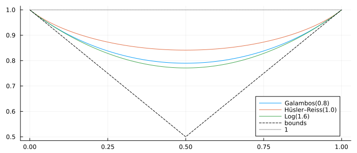
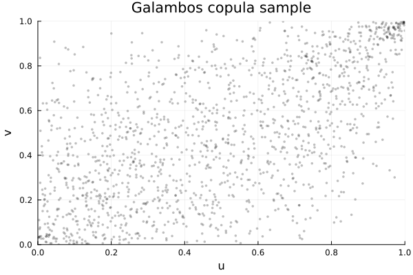
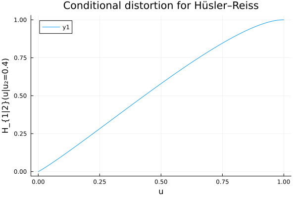
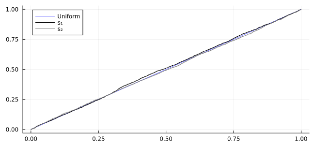

<!DOCTYPE html>
<html lang="en"><head><meta charset="UTF-8"/><meta name="viewport" content="width=device-width, initial-scale=1.0"/><title>Extreme Value family · Copulas.jl</title><meta name="title" content="Extreme Value family · Copulas.jl"/><meta property="og:title" content="Extreme Value family · Copulas.jl"/><meta property="twitter:title" content="Extreme Value family · Copulas.jl"/><meta name="description" content="Documentation for Copulas.jl."/><meta property="og:description" content="Documentation for Copulas.jl."/><meta property="twitter:description" content="Documentation for Copulas.jl."/><meta property="og:url" content="https://lrnv.github.io/Copulas.jl/extremevalue/generalities/"/><meta property="twitter:url" content="https://lrnv.github.io/Copulas.jl/extremevalue/generalities/"/><link rel="canonical" href="https://lrnv.github.io/Copulas.jl/extremevalue/generalities/"/><script data-outdated-warner src="../../assets/warner.js"></script><link href="https://cdnjs.cloudflare.com/ajax/libs/lato-font/3.0.0/css/lato-font.min.css" rel="stylesheet" type="text/css"/><link href="https://cdnjs.cloudflare.com/ajax/libs/juliamono/0.050/juliamono.min.css" rel="stylesheet" type="text/css"/><link href="https://cdnjs.cloudflare.com/ajax/libs/font-awesome/6.4.2/css/fontawesome.min.css" rel="stylesheet" type="text/css"/><link href="https://cdnjs.cloudflare.com/ajax/libs/font-awesome/6.4.2/css/solid.min.css" rel="stylesheet" type="text/css"/><link href="https://cdnjs.cloudflare.com/ajax/libs/font-awesome/6.4.2/css/brands.min.css" rel="stylesheet" type="text/css"/><link href="https://cdnjs.cloudflare.com/ajax/libs/KaTeX/0.16.8/katex.min.css" rel="stylesheet" type="text/css"/><script>documenterBaseURL="../.."</script><script src="https://cdnjs.cloudflare.com/ajax/libs/require.js/2.3.6/require.min.js" data-main="../../assets/documenter.js"></script><script src="../../search_index.js"></script><script src="../../siteinfo.js"></script><script src="../../../versions.js"></script><link class="docs-theme-link" rel="stylesheet" type="text/css" href="../../assets/themes/catppuccin-mocha.css" data-theme-name="catppuccin-mocha"/><link class="docs-theme-link" rel="stylesheet" type="text/css" href="../../assets/themes/catppuccin-macchiato.css" data-theme-name="catppuccin-macchiato"/><link class="docs-theme-link" rel="stylesheet" type="text/css" href="../../assets/themes/catppuccin-frappe.css" data-theme-name="catppuccin-frappe"/><link class="docs-theme-link" rel="stylesheet" type="text/css" href="../../assets/themes/catppuccin-latte.css" data-theme-name="catppuccin-latte"/><link class="docs-theme-link" rel="stylesheet" type="text/css" href="../../assets/themes/documenter-dark.css" data-theme-name="documenter-dark" data-theme-primary-dark/><link class="docs-theme-link" rel="stylesheet" type="text/css" href="../../assets/themes/documenter-light.css" data-theme-name="documenter-light" data-theme-primary/><script src="../../assets/themeswap.js"></script><link href="../../assets/citations.css" rel="stylesheet" type="text/css"/></head><body><div id="documenter"><nav class="docs-sidebar"><a class="docs-logo" href="../../"></a><div class="docs-package-name"><span class="docs-autofit"><a href="../../">Copulas.jl</a></span></div><button class="docs-search-query input is-rounded is-small is-clickable my-2 mx-auto py-1 px-2" id="documenter-search-query">Search docs (Ctrl + /)</button><ul class="docs-menu"><li><a class="tocitem" href="../../">Home</a></li><li><span class="tocitem">Manual</span><ul><li><a class="tocitem" href="../../getting_started/">Getting Started</a></li><li><a class="tocitem" href="../../sklar/">Sklar&#39;s Distribution</a></li><li><a class="tocitem" href="../../dependence_measures/">Dependence measures</a></li><li><a class="tocitem" href="../../conditioning_and_subsetting/">Conditioning and Subsetting</a></li><li><a class="tocitem" href="../../visualizations/">Visualizations</a></li><li><a class="tocitem" href="../../archimedean/generalities/">Archimedean family</a></li><li><a class="tocitem" href="../../elliptical/generalities/">Elliptical family</a></li><li class="is-active"><a class="tocitem" href>Extreme Value family</a><ul class="internal"><li class="toplevel"><a class="tocitem" href="#Advanced-Concepts"><span>Advanced Concepts</span></a></li><li><a class="tocitem" href="#Simulation-of-Bivariate-Extreme-Value-Distributions"><span>Simulation of Bivariate Extreme Value Distributions</span></a></li><li><a class="tocitem" href="#Visual-illustrations"><span>Visual illustrations</span></a></li><li><a class="tocitem" href="#See-also"><span>See also</span></a></li></ul></li><li><a class="tocitem" href="../../archimax/generalities/">Archimax family</a></li><li><a class="tocitem" href="../../Vines/">Vines family</a></li><li><a class="tocitem" href="../../empirical/generalities/">Empirical models</a></li><li><a class="tocitem" href="../../troubleshooting/">Troubleshooting</a></li></ul></li><li><span class="tocitem">Bestiary</span><ul><li><a class="tocitem" href="../../elliptical/available_models/">Elliptical Copulas</a></li><li><a class="tocitem" href="../../archimedean/available_models/">Archimedean Generators</a></li><li><a class="tocitem" href="../available_models/">Extreme Values Tails</a></li><li><a class="tocitem" href="../../archimax/available_models/">Archimax Models</a></li><li><a class="tocitem" href="../../empirical/available_models/">Empirical Copulas</a></li><li><a class="tocitem" href="../../miscellaneous/">Other Copulas</a></li><li><a class="tocitem" href="../../transformations/">Transformed Copulas</a></li></ul></li><li><span class="tocitem">Examples</span><ul><li><a class="tocitem" href="../../examples/archimedean_radial_estimation/">Nonparametric estimation of the radial law in Archimedean copulas</a></li><li><a class="tocitem" href="../../examples/lambda_viz/">Empirical Kendall function and Archimedean&#39;s λ function.</a></li><li><a class="tocitem" href="../../examples/lossalae/">Loss-Alae fitting example</a></li><li><a class="tocitem" href="../../examples/fitting_sklar/">Fitting compound distributions</a></li><li><a class="tocitem" href="../../examples/ifm1/">Influence of the method of estimation</a></li><li><a class="tocitem" href="../../examples/turing/">Bayesian inference with <code>Turing.jl</code></a></li><li><a class="tocitem" href="../../examples/other_usecases/">Other known use cases</a></li></ul></li><li><a class="tocitem" href="../../dev_roadmap/">Dev Roadmap</a></li><li><a class="tocitem" href="../../idx/">Package Index</a></li><li><a class="tocitem" href="../../references/">References</a></li></ul><div class="docs-version-selector field has-addons"><div class="control"><span class="docs-label button is-static is-size-7">Version</span></div><div class="docs-selector control is-expanded"><div class="select is-fullwidth is-size-7"><select id="documenter-version-selector"></select></div></div></div></nav><div class="docs-main"><header class="docs-navbar"><a class="docs-sidebar-button docs-navbar-link fa-solid fa-bars is-hidden-desktop" id="documenter-sidebar-button" href="#"></a><nav class="breadcrumb"><ul class="is-hidden-mobile"><li><a class="is-disabled">Manual</a></li><li class="is-active"><a href>Extreme Value family</a></li></ul><ul class="is-hidden-tablet"><li class="is-active"><a href>Extreme Value family</a></li></ul></nav><div class="docs-right"><a class="docs-navbar-link" href="https://github.com/lrnv/Copulas.jl" title="View the repository on GitHub"><span class="docs-icon fa-brands"></span><span class="docs-label is-hidden-touch">GitHub</span></a><a class="docs-navbar-link" href="https://github.com/lrnv/Copulas.jl/blob/main/docs/src/extremevalue/generalities.md" title="Edit source on GitHub"><span class="docs-icon fa-solid"></span></a><a class="docs-settings-button docs-navbar-link fa-solid fa-gear" id="documenter-settings-button" href="#" title="Settings"></a><a class="docs-article-toggle-button fa-solid fa-chevron-up" id="documenter-article-toggle-button" href="javascript:;" title="Collapse all docstrings"></a></div></header><article class="content" id="documenter-page"><h1 id="Extreme_theory"><a class="docs-heading-anchor" href="#Extreme_theory">Extreme Value Copulas</a><a id="Extreme_theory-1"></a><a class="docs-heading-anchor-permalink" href="#Extreme_theory" title="Permalink"></a></h1><p><em>Extreme value copulas</em> are fundamental in the study of rare and extreme events due to their ability to model dependency in situations of extreme risk. This package provides a wide selection of bivariate extreme value copulas; multivariate cases are not yet implemented. Feel free to open an issue or propose a pull request if you want to contribute a multivariate case. </p><div class="admonition is-info" id="Only-Bivariate-88ce73efa1176e74"><header class="admonition-header">Only Bivariate<a class="admonition-anchor" href="#Only-Bivariate-88ce73efa1176e74" title="Permalink"></a></header><div class="admonition-body"><p>The implementation here only deals with bivariate extreme value copulas. Multivariate cases are more tedious to implement, but not impossible: if you want to propose an implementation, we can provide guidance on how to merge it here. Do not hesitate to reach us on GitHub.</p></div></div><p>A bivariate extreme value copula [<a href="../../references/#gudendorf2010extreme">40</a>] <span>$C$</span> has the following characteristic property:</p><p class="math-container">\[C(u_1^t, u_2^t) = C(u_1, u_2)^t, \; t &gt; 0.\]</p><p>It can be represented through its stable tail dependence function <span>$\ell(\cdot)$</span>:</p><p class="math-container">\[C(u_1, u_2) = \exp\{-\ell(\log(u_1), \log(u_2))\},\]</p><p>or through a convex function <span>$A: [0,1] \to [1/2, 1]$</span> satisfying <span>$\max(t, t-1)\leq A(t) \leq 1,$</span> called its Pickands dependence function:</p><p class="math-container">\[C(u_1,u_2)=\exp\left\{\log(u_1u_2)A\left(\frac{\log(u_1)}{\log(u_1u_2)}\right)\right\},\]</p><p>In the context of bivariate extreme value copulas, the functions <span>$\ell$</span> and <span>$A$</span> are related as follows:</p><p class="math-container">\[\ell(u_1, u_2) = (u_1 + u_2)A\left(\frac{u_1}{u_1 + u_2}\right).\]</p><div class="admonition is-success" id="Only-A-is-needed-5e25ab856a9fc5b8"><header class="admonition-header">Only `A` is needed<a class="admonition-anchor" href="#Only-A-is-needed-5e25ab856a9fc5b8" title="Permalink"></a></header><div class="admonition-body"><p>In our implementation, it is sufficient to provide the Pickands dependence function <span>$A$</span> to construct the extreme value copula and have it work correctly. Providing the other functions would, of course, improve performance.</p></div></div><p>In this package, there is an abstract type <a href="#Copulas.ExtremeValueCopula"><code>ExtremeValueCopula</code></a> that provides a foundation for defining bivariate extreme value copulas. Many extreme value copulas are already implemented for you! See <a href="../available_models/#available_extreme_models">this list</a> to get an overview.</p><p>If you do not find the one you need, you may define it yourself by subtyping <code>ExtremeValueCopula</code>. The API requires only a method for the Pickands function <code>A(C::ExtremeValueCopula) = ...</code>. By providing this function, you can easily create a new extreme value copula that fits your specific needs:</p><pre><code class="language-julia hljs">struct MyExtremeValueCopula{P} &lt;: ExtremeValueCopula{P}
    θ::P
end

A(C::ExtremeValueCopula, t) = (t^C.θ + (1 - t)^C.θ)^(1/C.θ) # This is the Pickands function of the Logistic (Gumbel) Copula</code></pre><h1 id="Advanced-Concepts"><a class="docs-heading-anchor" href="#Advanced-Concepts">Advanced Concepts</a><a id="Advanced-Concepts-1"></a><a class="docs-heading-anchor-permalink" href="#Advanced-Concepts" title="Permalink"></a></h1><p>Here, we present some important concepts from the theory of extreme value copulas that are useful for the development of this package.</p><p>Let <span>$(X,Y) \sim C$</span> where <span>$C$</span> is a bivariate extreme value copula. We have the following result from [<a href="../../references/#ghoudi1998proprietes">41</a>]:</p><div class="admonition is-category-property" id="Property-(Ghoudi-1998):-12216f8d7002326b"><header class="admonition-header">Property (Ghoudi 1998):<a class="admonition-anchor" href="#Property-(Ghoudi-1998):-12216f8d7002326b" title="Permalink"></a></header><div class="admonition-body"><p>Let <span>$(X, Y) \sim C$</span>, where <span>$C$</span> is an extreme value copula. The joint distribution of <span>$X$</span> and <span>$Z = \frac{\log(X)}{\log(XY)}$</span> is given by:</p><p class="math-container">\[P(Z \leq z, X \leq x) = G(z, x) = \left(z + z(1 - z)\frac{A&#39;(z)}{A(z)}\right)x^{A(z)/z}, \quad 0 \leq x, z \leq 1\]</p><p>where <span>$A&#39;(z)$</span> denotes the derivative of <span>$A(z)$</span> at point <span>$z.$</span></p></div></div><p>Since <span>$A$</span> is a convex function defined on <span>$[0, 1]$</span> and satisfies <span>$-1 \leq A&#39;(z) \leq 1$</span>, by extension, we define <span>$A&#39;(1)$</span> as the supremum of <span>$A&#39;(z)$</span> over <span>$(0, 1)$</span>. By setting <span>$x = 1$</span> in the previous result, we obtain the marginal distribution of <span>$Z$</span>: <span>$P(Z \leq z) = G_Z(z) = z + z(1 - z) \frac{A&#39;(z)}{A(z)}, \quad 0 \leq z \leq 1.$</span></p><p>This result was demonstrated by Deheuvels (1991) [<a href="../../references/#deheuvels1991limiting">42</a>] in the case where <span>$A$</span> admits a second derivative.</p><h2 id="Simulation-of-Bivariate-Extreme-Value-Distributions"><a class="docs-heading-anchor" href="#Simulation-of-Bivariate-Extreme-Value-Distributions">Simulation of Bivariate Extreme Value Distributions</a><a id="Simulation-of-Bivariate-Extreme-Value-Distributions-1"></a><a class="docs-heading-anchor-permalink" href="#Simulation-of-Bivariate-Extreme-Value-Distributions" title="Permalink"></a></h2><p>To simulate a bivariate extreme value distribution <span>$C(x, y)$</span>, note that if <span>$F_1$</span> and <span>$F_2$</span> are univariate extreme value distributions, then the pair <span>$(F_1^{-1}(X), F_2^{-1}(Y))$</span> is distributed according to a bivariate extreme value distribution. The proposed algorithm in Ghoudi, 1998 [<a href="../../references/#ghoudi1998proprietes">41</a>] allows simulating such a distribution.</p><p>Assume <span>$A$</span> has a second derivative, making the distribution absolutely continuous. In this case, <span>$Z$</span> is also absolutely continuous and has a density <span>$g_Z(z)$</span> given by:</p><p class="math-container">\[g_Z(z) = \frac{d}{dz} G_Z(z) = 1 + (1 - z)^{-1} \left(A(z) - z A&#39;(z)\right)\]</p><p>The conditional distribution of <span>$W$</span> given <span>$Z$</span> is:</p><p class="math-container">\[F(w|z) = \frac{1}{g_Z(z)} \frac{d}{dz} F(z, w),\]</p><p>which simplifies to:</p><p class="math-container">\[F(w|z) = w \frac{z(1 - z) A&#39;(z)}{A(z) g_Z(z)} + (w - w \log w) \left(1 - \frac{z(1 - z) A&#39;&#39;(z)}{A(z) g_Z(z)} \right)\]</p><p>Given <span>$Z$</span>, the distribution of <span>$W$</span> is uniform on <span>$(0, 1)$</span> with probability <span>$p(Z)$</span> and equals the product of two independent uniforms on <span>$(0, 1)$</span> with probability <span>$1 - p(Z)$</span>, where:</p><p class="math-container">\[p(z) = \frac{z(1 - z) A&#39;(z)}{A(z) g_Z(z)}\]</p><p>Since <span>$g_Z(z)$</span> is the derivative of the cumulative distribution function of <span>$Z$</span>, it holds that <span>$0 \leq p(z) \leq 1$</span>.</p><p>For the class of Extreme Value Copulas, We follow the methodology proposed by Ghoudi,1998. page 191. [<a href="../../references/#ghoudi1998proprietes">41</a>]. Here, is a detailed algorithm for sampling from bivariate Extreme Value Copulas:</p><div class="admonition is-category-algorithm" id="Algorithm-(Bivariate-Extreme-Value-Copulas-sampling):-9e9d722f6c695d0"><header class="admonition-header">Algorithm (Bivariate Extreme Value Copulas sampling):<a class="admonition-anchor" href="#Algorithm-(Bivariate-Extreme-Value-Copulas-sampling):-9e9d722f6c695d0" title="Permalink"></a></header><div class="admonition-body"><ul><li>Simulate <span>$U_1, U_2 \sim \mathcal{U}[0, 1]$</span></li><li>Simulate <span>$Z \sim G_Z(z)$</span></li><li>Select <span>$W = U_1$</span> with probability <span>$p(Z)$</span> and <span>$W = U_1U_2$</span> with probability <span>$1 - p(Z)$</span></li><li>Return <span>$X = W^{Z/A(Z)}$</span> and <span>$Y = W^{(1 - Z)/A(Z)}$</span>  </li></ul></div></div><p>Note that all functions present in the algorithm were previously defined to ensure that the implemented methodology has a solid theoretical basis.</p><article class="docstring"><header><a class="docstring-article-toggle-button fa-solid fa-chevron-down" href="javascript:;" title="Collapse docstring"></a><a class="docstring-binding" id="Copulas.Tail" href="#Copulas.Tail"><code>Copulas.Tail</code></a> — <span class="docstring-category">Type</span><span class="is-flex-grow-1 docstring-article-toggle-button" title="Collapse docstring"></span></header><section><div><pre><code class="language-julia hljs">Tail</code></pre><p>Abstract type. Implements the API for stable tail dependence functions (STDFs) of extreme-value copulas in dimension <code>d</code>.</p><p>A STDF is a function <span>$\ell : \mathbb{R}_{+}^d → [0,\infty)$</span> that is 1-homogeneous (<span>$\ell(t·x)=t·\ell(x)$</span> for all <span>$t≥0$</span>), convex,  and satisfies the bounds <span>$\max(x_1,\ldots,x_d) ≤ \ell(x) ≤ x_1+ \cdots +x_d$</span> (in particular <span>$\ell(e_i)=1$</span>).</p><p>Pickands representation. By homogeneity, for <span>$x\neq 0$</span> let <span>$\left\| x\right\|_1=x_1+\cdots+x_d$</span> and <span>$\omega=x/\left\| x \right\|_1 \in \Delta_{d-1}$</span>. There exists a Pickands dependence function <span>$A:\Delta_{d-1}\to [0,1]$</span> (convex, <span>$\max(\omega_i)≤A(\omega)≤1$</span>) such that <span>$\ell(x)=\left\| x\right\|_1·A(\omega)$</span>. For <span>$d=2$</span>, <span>$A$</span> reduces to a convex function on <span>$[0,1]$</span> with <span>$\max(t,1-t)≤A(t)≤1$</span> and <span>$A(0)=A(1)=1$</span>.</p><p>Interface.</p><ul><li><code>A(tail::Tail, ω::NTuple{d,Real})</code> — Pickands function on the simplex <code>\Delta_{d-1}</code>. (For <code>d=2</code>, a convenience <code>A(tail::Tail{2}, t::Real)</code> may be provided.)</li><li><code>ℓ(tail::Tail, x::NTuple{d,Real})</code> — STDF. By default the package defines <code>ℓ(tail, x) = ‖x‖₁ * A(tail, x/‖x‖₁)</code> when <code>A</code> is available.</li></ul><p>We do not algorithmically verify convexity/bounds; implementers are responsible for validity.</p><p>Additional helpers (with defaults).</p><ul><li>For <code>d=2</code>: <code>dA</code>, <code>d²A</code> via AD; stable <code>logpdf</code>/<code>rand</code> (Ghoudi sampler).</li><li>In any <code>d</code>: <code>cdf(u) = exp(-ℓ(-log.(u)))</code>.</li></ul><p>References:</p><ul><li>Pickands (1981); Gudendorf &amp; Segers (2010); Ghoudi, Khoudraji &amp; Rivest (1998); de Haan &amp; Ferreira (2006).</li><li>Rasell</li></ul></div><a class="docs-sourcelink" target="_blank" href="https://github.com/lrnv/Copulas.jl/blob/b0d817d5455401f62fd917849b91c429daf10fcb/src/Tail.jl#L1-L32">source</a></section></article><article class="docstring"><header><a class="docstring-article-toggle-button fa-solid fa-chevron-down" href="javascript:;" title="Collapse docstring"></a><a class="docstring-binding" id="Copulas.ExtremeValueCopula" href="#Copulas.ExtremeValueCopula"><code>Copulas.ExtremeValueCopula</code></a> — <span class="docstring-category">Type</span><span class="is-flex-grow-1 docstring-article-toggle-button" title="Collapse docstring"></span></header><section><div><pre><code class="language-julia hljs">ExtremeValueCopula{d, TT}</code></pre><p>Constructor</p><pre><code class="nohighlight hljs">ExtremeValueCopula(d, tail::Tail)</code></pre><p>Extreme-value copulas model tail dependence via a stable tail dependence function (STDF) <span>$\ell$</span> or, equivalently, via a Pickands dependence function <span>$A$</span>. In any dimension <span>$d$</span>, the copula cdf is</p><p class="math-container">\[\displaystyle C(u) = \xp\!\left(-\, \ll(-\log u_1,\ldots,-\log u_d) \right).\]</p><p>For <span>$d=2$</span>, write <span>$x=-\log u$</span>, <span>$y=-\log v$</span>, <span>$s=x+y$</span>, and <span>$t = x/s$</span>. The relation between <span>$\ell$</span> and <span>$A$</span> is</p><p class="math-container">\[\ell(x,y) = s\, A(t), \qquad A:[0,1]\to[1/2,1], \quad A(0)=A(1)=1, \ A \text{ convex}.\]</p><p>Usage</p><ul><li>Provide any valid tail <code>tail::Tail</code> (which implements <code>A</code> and/or <code>ℓ</code>) to construct the copula.</li><li>Sampling, cdf, and logpdf follow the standard <code>Distributions.jl</code> API.</li></ul><p>Example</p><pre><code class="language-julia hljs">C = ExtremeValueCopula(2, GalambosTail(θ))
U = rand(C, 1000)
logpdf.(Ref(C), eachcol(U))</code></pre><p>References:</p><ul><li>[<a href="../../references/#gudendorf2010extreme">40</a>] G., &amp; Segers, J. (2010). Extreme-value copulas. In Copula Theory and Its Applications (pp. 127-145). Springer.</li><li>[<a href="../../references/#joe2014">4</a>] Joe, H. (2014). Dependence Modeling with Copulas. CRC Press.</li><li>[<a href="../../references/#mai2014financial">43</a>] Mai, J. F., &amp; Scherer, M. (2014). Financial engineering with copulas explained (p. 168). London: Palgrave Macmillan.</li></ul></div><a class="docs-sourcelink" target="_blank" href="https://github.com/lrnv/Copulas.jl/blob/b0d817d5455401f62fd917849b91c429daf10fcb/src/ExtremeValueCopula.jl#L1-L37">source</a></section></article><h2 id="Visual-illustrations"><a class="docs-heading-anchor" href="#Visual-illustrations">Visual illustrations</a><a id="Visual-illustrations-1"></a><a class="docs-heading-anchor-permalink" href="#Visual-illustrations" title="Permalink"></a></h2><h3 id="Pickands-dependence-functions-A(t)"><a class="docs-heading-anchor" href="#Pickands-dependence-functions-A(t)">Pickands dependence functions A(t)</a><a id="Pickands-dependence-functions-A(t)-1"></a><a class="docs-heading-anchor-permalink" href="#Pickands-dependence-functions-A(t)" title="Permalink"></a></h3><pre><code class="language-julia hljs">using Copulas, Plots, Distributions
ts = range(0.0, 1.0; length=401)
Cs = (
    GalambosCopula(0.8),    # upper tail dep.
    HuslerReissCopula(1.0), # intermediate
    LogCopula(1.6),         # asymmetric
)
labels = (&quot;Galambos(0.8)&quot;, &quot;Hüsler–Reiss(1.0)&quot;, &quot;Log(1.6)&quot;)
plot(size=(700, 300))
for (i, C) in enumerate(Cs)
    plot!(ts, Copulas.A.(C.tail, ts); label=labels[i])
end
plot!(ts, max.(ts, 1 .- ts); label=&quot;bounds&quot;, ls=:dash, color=:black)
plot!(ts, ones(length(ts)); label=&quot;1&quot;, ls=:dot, color=:gray)</code></pre><h3 id="Sample-scatter-(uniform-scale)"><a class="docs-heading-anchor" href="#Sample-scatter-(uniform-scale)">Sample scatter (uniform scale)</a><a id="Sample-scatter-(uniform-scale)-1"></a><a class="docs-heading-anchor-permalink" href="#Sample-scatter-(uniform-scale)" title="Permalink"></a></h3><pre><code class="language-julia hljs">C = GalambosCopula(1.0)
plot(C, title=&quot;Galambos copula sample&quot;)</code></pre><h3 id="Conditional-distortion-(EV-example)"><a class="docs-heading-anchor" href="#Conditional-distortion-(EV-example)">Conditional distortion (EV example)</a><a id="Conditional-distortion-(EV-example)-1"></a><a class="docs-heading-anchor-permalink" href="#Conditional-distortion-(EV-example)" title="Permalink"></a></h3><pre><code class="language-julia hljs">C = HuslerReissCopula(1.2)
u2 = 0.4
D = condition(C, 2, u2)
ts = range(0.0, 1.0; length=401)
plot(ts, cdf.(Ref(D), ts); xlabel=&quot;u&quot;, ylabel=&quot;H_{1|2}(u|u₂=0.4)&quot;,
     title=&quot;Conditional distortion for Hüsler–Reiss&quot;)</code></pre><h3 id="Rosenblatt-sanity-check-(EV)"><a class="docs-heading-anchor" href="#Rosenblatt-sanity-check-(EV)">Rosenblatt sanity check (EV)</a><a id="Rosenblatt-sanity-check-(EV)-1"></a><a class="docs-heading-anchor-permalink" href="#Rosenblatt-sanity-check-(EV)" title="Permalink"></a></h3><pre><code class="language-julia hljs">using StatsBase
U = rand(C, 2000)
S = reduce(hcat, (rosenblatt(C, U[:, i]) for i in 1:size(U,2)))
ts = range(0.0, 1.0; length=401)
EC = [ecdf(S[k, :]) for k in 1:2]
plot(ts, ts; label=&quot;Uniform&quot;, color=:blue, alpha=0.6, size=(650,300))
plot!(ts, EC[1].(ts); seriestype=:steppost, label=&quot;s₁&quot;, color=:black)
plot!(ts, EC[2].(ts); seriestype=:steppost, label=&quot;s₂&quot;, color=:gray)</code></pre><h2 id="See-also"><a class="docs-heading-anchor" href="#See-also">See also</a><a id="See-also-1"></a><a class="docs-heading-anchor-permalink" href="#See-also" title="Permalink"></a></h2><ul><li>Bestiary: <a href="../available_models/#available_extreme_models">Implemented Extreme Value copulas</a></li><li>Manual: <a href="../../conditioning_and_subsetting/#Conditioning-and-Subsetting">Conditioning and Subsetting</a></li></ul><div class="citation noncanonical"><dl><dt>[4]</dt><dd><div>H. Joe. <em>Dependence Modeling with Copulas</em> (CRC press, 2014).</div></dd><dt>[40]</dt><dd><div>G. Gudendorf and J. Segers. <em>Extreme-value copulas</em>. In: <em>Copula Theory and Its Applications: Proceedings of the Workshop Held in Warsaw, 25-26 September 2009</em> (Springer, 2010); pp. 127–145.</div></dd><dt>[41]</dt><dd><div>K. Ghoudi, A. Khoudraji and E. L.-P. Rivest. <em>Propriétés statistiques des copules de valeurs extrêmes bidimensionnelles</em>. Canadian Journal of Statistics <strong>26</strong>, 187–197 (1998).</div></dd><dt>[42]</dt><dd><div>P. Deheuvels. <em>On the limiting behavior of the Pickands estimator for bivariate extreme-value distributions</em>. Statistics &amp; Probability Letters <strong>12</strong>, 429–439 (1991).</div></dd><dt>[43]</dt><dd><div>J.-F. Mai and M. Scherer. <em>Financial engineering with copulas explained</em> (Springer, 2014).</div></dd></dl></div></article><nav class="docs-footer"><a class="docs-footer-prevpage" href="../../elliptical/generalities/">« Elliptical family</a><a class="docs-footer-nextpage" href="../../archimax/generalities/">Archimax family »</a><div class="flexbox-break"></div><p class="footer-message">Powered by <a href="https://github.com/JuliaDocs/Documenter.jl">Documenter.jl</a> and the <a href="https://julialang.org/">Julia Programming Language</a>.</p></nav></div><div class="modal" id="documenter-settings"><div class="modal-background"></div><div class="modal-card"><header class="modal-card-head"><p class="modal-card-title">Settings</p><button class="delete"></button></header><section class="modal-card-body"><p><label class="label">Theme</label><div class="select"><select id="documenter-themepicker"><option value="auto">Automatic (OS)</option><option value="documenter-light">documenter-light</option><option value="documenter-dark">documenter-dark</option><option value="catppuccin-latte">catppuccin-latte</option><option value="catppuccin-frappe">catppuccin-frappe</option><option value="catppuccin-macchiato">catppuccin-macchiato</option><option value="catppuccin-mocha">catppuccin-mocha</option></select></div></p><hr/><p>This document was generated with <a href="https://github.com/JuliaDocs/Documenter.jl">Documenter.jl</a> version 1.14.1 on <span class="colophon-date" title="Saturday 13 September 2025 14:25">Saturday 13 September 2025</span>. Using Julia version 1.11.6.</p></section><footer class="modal-card-foot"></footer></div></div></div></body></html>
